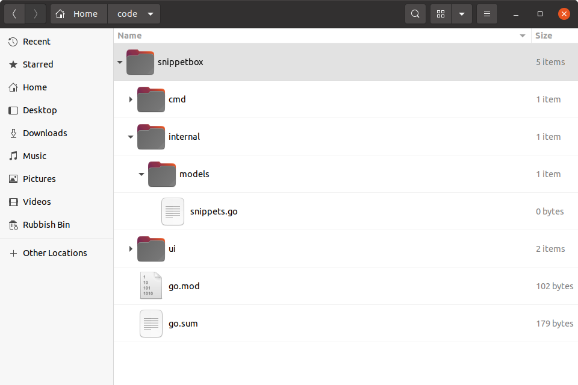

طراحی مدل پایگاه داده
در این فصل، ما قصد داریم یک مدل پایگاه داده برای پروژه خود ترسیم کنیم.
اگر از اصطلاح مدل خوشتان نمیآید، ممکن است بخواهید آن را به عنوان یک لایه سرویس یا لایه دسترسی به داده در نظر بگیرید. هر چه ترجیح میدهید آن را بنامید، ایده این است که کد کار با MySQL را در یک پکیج جدا از بقیه برنامه خود کپسوله کنیم.
برای حالا، یک مدل پایگاه داده اسکلتی ایجاد میکنیم و آن را به گونهای میکنیم که کمی داده ساختگی برگرداند. کار زیادی انجام نمیدهد، اما میخواهم الگو را قبل از ورود به جزئیات پرسوجوهای SQL توضیح دهم.
خوب است؟ پس بیایید ادامه دهیم و یک دایرکتوری جدید internal/models حاوی یک فایل snippets.go ایجاد کنیم:
$ mkdir -p internal/models $ touch internal/models/snippets.go

بیایید فایل internal/models/snippets.go را باز کنیم و یک ساختار جدید Snippet برای نمایش دادههای یک snippet فردی اضافه کنیم، همراه با یک نوع SnippetModel با متدهای روی آن برای دسترسی و دستکاری snippetها در پایگاه داده ما. مانند این:
package models import ( "database/sql" "time" ) // Define a Snippet type to hold the data for an individual snippet. Notice how // the fields of the struct correspond to the fields in our MySQL snippets // table? type Snippet struct { ID int Title string Content string Created time.Time Expires time.Time } // Define a SnippetModel type which wraps a sql.DB connection pool. type SnippetModel struct { DB *sql.DB } // This will insert a new snippet into the database. func (m *SnippetModel) Insert(title string, content string, expires int) (int, error) { return 0, nil } // This will return a specific snippet based on its id. func (m *SnippetModel) Get(id int) (Snippet, error) { return Snippet{}, nil } // This will return the 10 most recently created snippets. func (m *SnippetModel) Latest() ([]Snippet, error) { return nil, nil }
استفاده از SnippetModel
برای استفاده از این مدل در handlerهای خود، باید یک ساختار جدید SnippetModel در تابع main() خود ایجاد کنیم و سپس آن را به عنوان یک وابستگی از طریق ساختار application تزریق کنیم — دقیقاً همانطور که با سایر وابستگیهای خود داریم.
اینطور است:
package main import ( "database/sql" "flag" "log/slog" "net/http" "os" // Import the models package that we just created. You need to prefix this with // whatever module path you set up back in chapter 02.01 (Project Setup and Creating // a Module) so that the import statement looks like this: // "{your-module-path}/internal/models". If you can't remember what module path you // used, you can find it at the top of the go.mod file. "snippetbox.alexedwards.net/internal/models" _ "github.com/go-sql-driver/mysql" ) // Add a snippets field to the application struct. This will allow us to // make the SnippetModel object available to our handlers. type application struct { logger *slog.Logger snippets *models.SnippetModel } func main() { addr := flag.String("addr", ":4000", "HTTP network address") dsn := flag.String("dsn", "web:pass@/snippetbox?parseTime=true", "MySQL data source name") flag.Parse() logger := slog.New(slog.NewTextHandler(os.Stdout, nil)) db, err := openDB(*dsn) if err != nil { logger.Error(err.Error()) os.Exit(1) } defer db.Close() // Initialize a models.SnippetModel instance containing the connection pool // and add it to the application dependencies. app := &application{ logger: logger, snippets: &models.SnippetModel{DB: db}, } logger.Info("starting server", "addr", *addr) err = http.ListenAndServe(*addr, app.routes()) logger.Error(err.Error()) os.Exit(1) } ...
اطلاعات اضافی
مزایای این ساختار
اگر یک قدم به عقب بردارید، ممکن است بتوانید چند مزیت از راهاندازی پروژه خود به این روش ببینید:
یک جدایی تمیز از نگرانیها وجود دارد. منطق پایگاه داده ما به handlerهای ما گره خورده نخواهد بود، که به معنای محدود بودن مسئولیتهای handler به چیزهای HTTP (یعنی اعتبارسنجی درخواستها و نوشتن پاسخها) است. این نوشتن تستهای واحد محکم، متمرکز را در آینده آسانتر میکند.
با ایجاد یک نوع سفارشی
SnippetModelو پیادهسازی متدهای روی آن، توانستهایم مدل خود را به یک شیء واحد و به خوبی کپسوله شده تبدیل کنیم، که میتوانیم به راحتی آن را مقداردهی اولیه کنیم و سپس به عنوان یک وابستگی به handlerهای خود ارسال کنیم. دوباره، این باعث کد قابل نگهداریتر و قابل تست میشود.چون اعمال مدل به عنوان متدهای روی یک شیء تعریف شدهاند — در مورد ما
SnippetModel— فرصت ایجاد یک رابط و mock کردن آن برای اهداف تست واحد وجود دارد.و در نهایت، کنترل کامل بر اینکه کدام پایگاه داده در زمان اجرا (runtime) استفاده میشود داریم، فقط با استفاده از پرچم خط فرمان
-dsn.